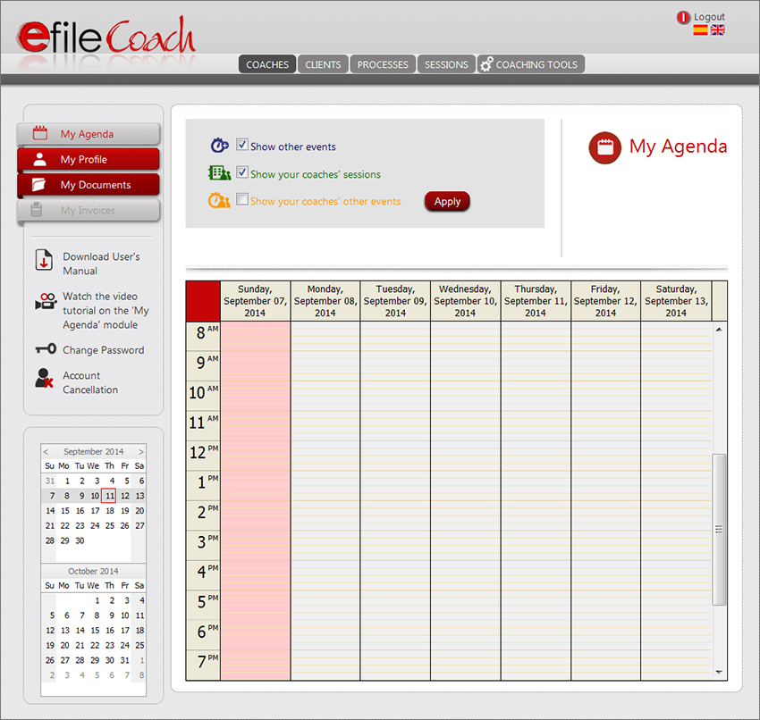
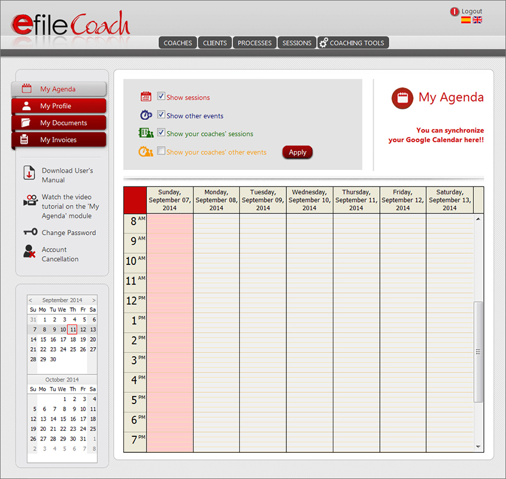
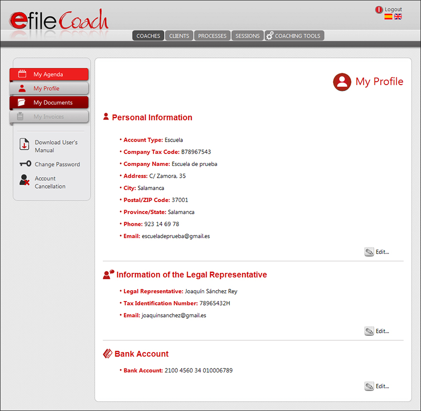
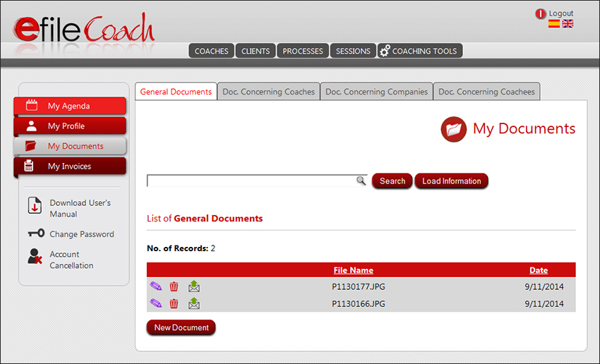
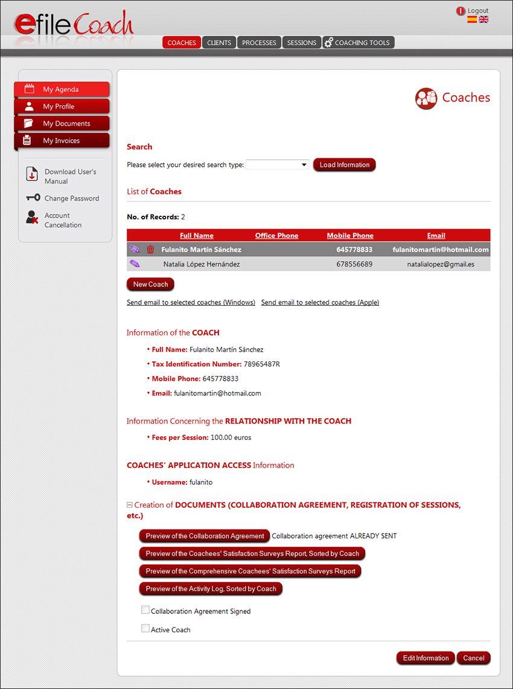
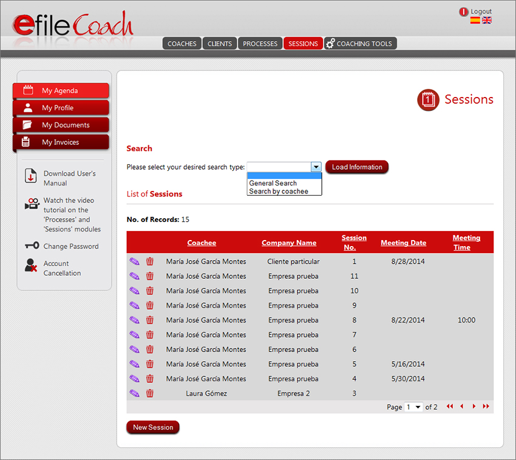
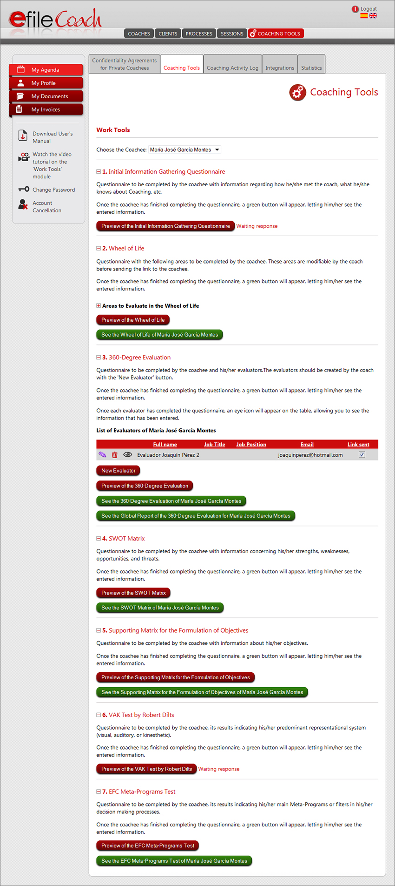
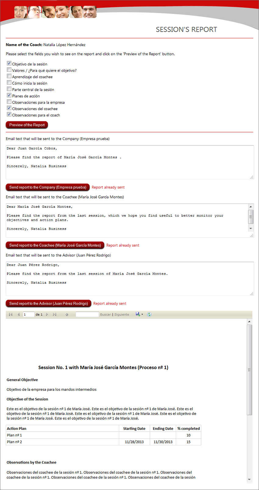
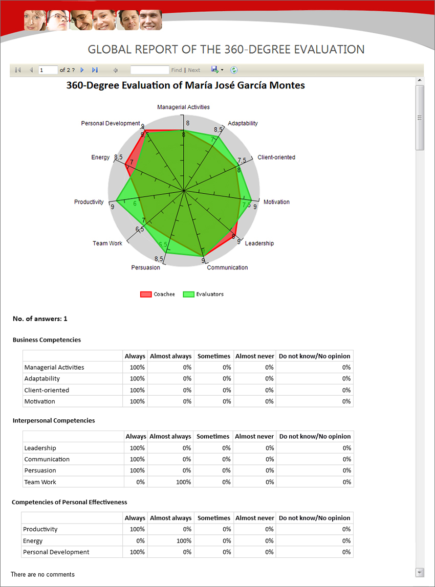

INFORMATION ABOUT THE MECHANISM OF EFILE COACH
We are going to explain the mechanism of the application from two different perspectives: the Admin Users (School, Private, Premier y Business) and the Modules to which you may have access depending on the user type you have chosen.
* The Private, Premier and Business user accounts share the same mechanism. The difference among them is the maximum number of Coach User profiles that can be registered in each. By default, the application copies the Admin User's information as the first Coach User profile, with the exception of schools.
The Private user account is intended for Admin Users who are coaches who conduct all of their coaching processes personally.
The Premier and Business user accounts are intended for individuals or companies that have other coaches conduct the coaching processes for them.
* The School user account is intended for Coaching Schools that do not offer coaching processes per se, but that wish to register their students in the application, offering them an added value and simplifying their supervision and mentoring by sending their logged sessions electronically.
We should not forget that the confidentiality of the Coaching processes is one of the keys to the success of the same. This is less important, though, when the registered user is the same person who conducts the processes (Private user). The situation is a little complex when the coach who accesses the application is not the Admin User. The Coach User is a special user type that depends on an Admin User.
In order to make the use of the application easier without stop complying by the confidentiality rules, we have allowed each user to have access to some modules or others. Thus, we are able to respect the confidentiality of the sessions, and if coaches are not direct users of the application, they do not have access to the information of invididuals or companies.
We will now explain each User and Module in detail.
The application comprises nine general modules arranged in two menus. The menu at the top contains the following modules:
The menu on the left comprises the following modules:
The structure is practically the same across the modules of Coaches, Clients, Processes, Sessions, My Documents, and My Invoices. They have a table or registry with the list of records, and a series of text boxes and drop-down menus displaying the information corresponding to the record selected from the table.
Additionally, there is a second menu on the left with the following options:
- Download User's Manual
- Change Password
- Account Cancellation
User Types
There are four different user types corresponding to the four modalities that are available upon registration:
Also, there is the Coach User, which will be associated to each of the coach profiles created by the aforementioned users.
Application Access
On the one hand, the application may be accessed by those users who have registered through the registration button on the Home page (who will need to choose from one of the four modalities being offered: School, Private, Premier or Business). On the other hand, the application may also be accessed by all the Coach User profiles that have been created by any of the registered users.
User: School
Intended for Coaching Schools that do not offer coaching processes, but wish to offer their students free access to the application and make the feedback following their sessions more accessible.
Characteristics
- Price: Free Service
- No. Coaches: Unlimited
- No. Sessions: Unlimited
Mechanism
The school should register itself in order to access the application. Once the registration is complete, it will need to contact soporte@efilecoach.com.
The school will have access to the following modules: My Agenda, My Profile and My Documents (left-hand menu), and Coaches (top menu).
A school may create an unlimited number of Coach User profiles to whom a login name should be assigned. The passwords should be reset by the coaches once they receive the application's welcoming email. The coaches themselves are responsible for setting up the company profiles and of those coachees with whom they will be working.

Example of access to the application as School user
User: Private
Intended for self-employed coaches who conduct the coaching processes personally.
Characteristics
- Price: Monthly 24.19 € (VAT included) / Annual 246.72 € (VAT included)
- No. Coaches: 1
- No. Sessions: Unlimited
Mechanism
A Private user should register first in order to access the application. Once registered, he/she will have a login name and a password.
If the registered user is a natural person, the user's information will automatically be copied to the registry of Coaches. Thus, the user will be able to start working right away without creating a separate Coach User profile.
If a legal person is registered, the information that will automatically be copied on the registry of Coaches will belong to the legal representative. Thus, the user will be able to start working right away without creating a separate Coach User profile.
A Private user will have access to the following modules: My Agenda, My Profile, My Documents and My Invoices (left-hand menu), and Coaches, Clients, Processes, Sessions, and Coaching Tools (top menu).

Example of access to the application as Private user
User: Premier
Intended for individuals or companies who offer coaching processes and wish or need other coaches to conduct them.
Characteristics
- Price: Monthly 36.29 € (VAT included) / Annual 370.14 € (VAT included)
- No. Coaches: 5
- No. Sessions: Unlimited
Mechanism
A Premier user should register first in order to access the application. Once registered, he/she will have a login name and a password.
If the registered user is a natural person, the user's information will automatically be copied to the registry of Coaches. Thus, the user will be able to start working right away without creating a separate Coach User profile.
If a company is registered, its legal representative's information will automatically be copied to the registry of Coaches. Thus, the user will be able to start working right away without creating a separate Coach User profile.
Additionally, a Premier user is allowed to create 4 other Coach User profiles to whom a login name should be assigned. The passwords should be reset by the coaches once they receive the application's welcoming email. Thus, these coaches will be able to access the application with their login and password.
A Premier user will have access to the following modules: My Agenda, My Profile, My Documents and My Invoices (left-hand menu), and Coaches, Clients, Processes, Sessions and Coaching Tools (top menu).
User: Business
Intended for individuals or companies who offer coaching processes and wish or need to have other coaches to conduct them.
Characteristics
- Price: Monthly 120.99 € (VAT included) / Annual 1,234.08 € (VAT included)
- No. Coaches: 20
- No. Sessions: Unlimited
Mechanism
A Business user should register first in order to access the application. Once registered, he/she will have a login name and a password.
If the registered user is a natural person, the user's information will automatically be copied to the registry of Coaches. Thus, the user will be able to start working right away without creating a separate Coach User profile.
If a company is registered, its legal representative's information will automatically be copied to the registry of Coaches. Thus, the user will be able to start working right away without creating a separate Coach User profile.
Additionally, a Business user is allowed to create 19 other coach profiles to whom a login name should be assigned. The passwords should be reset by the coaches once they receive the application's welcoming email. Thus, these coaches will be able to access the application with their login and password.
A Business user will have access to the following modules: My Agenda, My Profile, My Documents and My Invoices (left-hand menu), and Coaches, Clients, Processes, Sessions and Coaching Tools (top menu).
User: Coach
This is a special user type that conducts coaching sessions for another individual or company; and therefore, does not have access to the clients' general information, in compliance with the Spanish Personal Data Protection Act. His/her sessions are confidential, but we provide the option of sending reports to the Admin User or the School for feedback (this option is included in the signing of the contracts provided by eFile Coach).
Characteristics
- Price: None, because a Coach User always needs to be created by a user who is already registered (School, Private, Premier or Business).
- No. Sessions: Unlimited
Mechanism
A Coach User will have a login name that will have previously been assigned by the registered user (School, Private, Premier or Business). The password should be reset by the Coach once he/she receives the application's welcoming email.
There are two possible cases:
- The registered user is a school: the Coach User will have access to the modules of My Agenda and My Documents (left-hand menu), and Clients, Processes, Sessions and Coaching Tools (top menu).
- The registered user is a natural or legal person: the Coach User will have access to the modules of My Agenda and My Documents (left-hand menu), and Sessions and Coaching Tools (top menu).
Mechanism of the Different Modules
Module: My Agenda
You will see two types of events:
- The scheduled sessions in the 'Next Session' field from the Sessions module
- The events manually created on the agenda
You may differentiate both types by color.
To directly create an event on the agenda, select the duration of the event by clicking and dragging the mouse. Any appointment Is easily modifiable by simply dragging it with the mouse.
If you are using Google Calendar, you may synchronize your eFile Coach agenda with your calendar in order to access your events on your computer, mobile, or tablet.
For the Premier and Business versions, you have access to your Coaches' agendas to meet your client's demands.
Module: My Profile
Module accessible to all registered users (School, Private, Premier or Business).
It allows updating the user's information. The user type and login name to access the application cannot be changed.

Example of My Profile module of a School user
Module: My Documents
Module accessible to all registered users (School, Private, Premier or Business) and to the Coach Users created by the registered users.
Each registered user (School, Private, Premier or Business) will only be able to access the documents that he/she has saved or those saved by the Coach Users he/she has created.
Each Coach User will only be able to access the documents saved by him/her. The Documents Concerning Companies module will not be accessible to them.

Example of General Documents module
Module: My Invoices
Module that is accessible to all registered users such as Private, Premier or Business (a School user or a Coach User created by any registered user may not create invoices).
Each registered user (Private, Premier or Business) may only access the invoices created by him/her.
It includes two modules: Companies Invoices and Individuals Invoices.
Module: Coaches
Module accessible to all registered users (School, Private, Premier or Business).
It allows a registered user (School, Private, Premier or Business) to create Coach User profiles and change their information.
Each registered user (School, Private, Premier or Business) may only access the Coach User profiles created by him/her.

Example of Coaches module
Module: Clients
Module accessible to all registered users such as Private, Premier or Business, and to the Coach Users created by a School user.
It includes two modules: Companies and Individuals.
The Companies module allows creating new companies and modifying the information of those that already exist. Each user may only access the company profiles created by him/her.
The Individuals module allows creating new individuals and modifying the information of those that already exist. Additionally, several processes for each person may be created from this module, private or company-related. Each user may only access the coachee profiles created by him/her.
Module: Processes
Module accessible to all registered users such as Private, Premier or Business, and to the Coach Users created by a School user.
It includes two modules: Companies Processes and Individuals Processes.
The Companies Processes module allows editing or modifying the information of those that have been created on the Individuals module.
The Individual Processes module allows editing and modifying the private processes created from the Individuals module.
The first process assigned to a coachee cannot be deleted.
Each user may only access the processes created by him/her.
Module: Sessions
Module accessible to all the Coach Users created by the registered users and to all registered users whose first coach profile matches them.
Each coach may only access the sessions created by him/her.

Example of Sessions module
Module: Coaching Tools
Module accessible to all the Coach Users created by the registered users and to all registered users whose first coach profile matches them.
It includes five modules:
- Confidentiality Agreements for Private Coachees: allows accessing the confidentiality agreement of private coachees, as well as updating the field of 'Confidentiality Agreement Signed' for each of them.
- Work Tools:
- Initial Information Gathering Questionnaire
- Wheel of Life
- 360-Degree Evaluation
- SWOT Matrix
- Supporting Matrix for the Formulation of Objectives
- VAK Test by Robert Dilts
- EFC Meta-Programs Test
- Coaching Activity Log: The coach's activity log may be accessed here.
- Integrations:
- Google Calendar: allows synchronizing Google's calendar with the agenda from efile Coach.
- MailChimp: allows synchronizing your MailChimp application information with efile Coach so that your clients and their email addresses may be exported from efile Coach to mailing lists on MailChimp.
- GetResponse: allows synchronizing your GetResponse application information with efile Coach so that your clients and their email addresses may be exported from efile Coach to GetResponse.
- Statistics: it allows seeing a report, with the option of selecting the coach and the year of your choice, with different statistics (No. of Processes Initiated per Month, No. of Sessions per Month, No. of Sessions per Type of Coaching...).

Example of Coaching Tools module
Other Things to Keep in Mind:
Reports
In every module, the application allows generating a series of reports that will open on a pop-up window. These are exportable to PDF, Excel, or Word format, or may also be directly sent via email.
Reports in the Coaches module
- Collaboration Agreement
- Coachees' Satisfaction Surveys Report, Sorted by Coach
- Comprehensive Coachees' Satisfaction Surveys Report
- Activity Log, Sorted by Coach
Reports in the Companies module
- Company Contract (section Information of the Company Contracts; generated and sent once all the coachees from the company are registered)
- Agreement(s) with the Coachee(s) (section Information of the Company Contracts; generated and sent to every coachee employed by the company)
- ICF Code of Ethics
- Coachees' Satisfaction Surveys Report, Sorted by Company
Reports in the Individuals module
- Private Client Contract (section Information of the individual processes; only for cases where the coachee does not belong to any company)
- ICF Code of Ethics
- Satisfaction Survey (preview)
- Satisfaction Survey Report
Reports in the Sessions module
- Sessions' Summary, Sorted by Process
- Sessions' Summary for the Coach, Sorted by Process
- Session's Report: It is possible to select the fields containing the information you want to display on the report depending on whom it is addressed to.

Example of Session's Report
Reports in the My Invoices module
- Company Invoice
- Individual Invoice
Reports in the Coaching Tools module
- Confidentiality Agreement (generated and sent to every coachee)
- Initial Information Gathering Questionnaire (sent to every coachee)
- Wheel of Life (sent to every coachee)
- 360-Degree Evaluation (sent to every coachee and to his/her evaluators)
- SWOT Matrix (sent to every coachee)
- Supporting Matrix for the Formulation of Objectives (sent to every coachee)
- VAK Test by Robert Dilts (sent to every coachee)
- EFC Meta-Programs Test (sent to every coachee)
- Coaching Activity Log

Example of a global report of a coachee's 360-Degree Evaluation